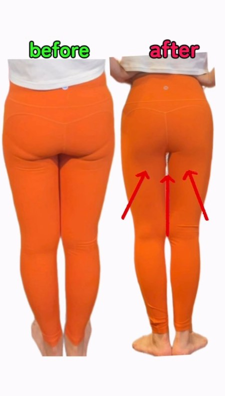
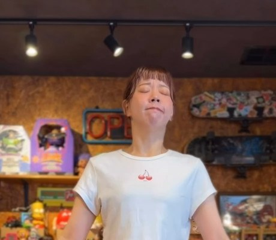

運動嫌い・ズボラな私でも続いた
「1日5分」だけの脚やせ習慣
このカレンダーを開いてくれてありがとう🧡 34歳ママの、たまです。
出産してから、体重より気になったのが「脚だけ戻らない」こと。毎日バタバタで、運動は大の苦手…。
そこでSNSでバズってる脚やせを片っぱしから3日間ずつ検証してきました。その中から「ちゃんと数字が動いた」「ズボラでも続いた」ものだけを、1週間に詰めこんだよ✨

脚やせ40日目の記録
太もも 56→48.5cm
ふくらはぎ 36→30.5cm
足首 21→19cm
※たま個人の結果です。効果には個人差があります。
※チェックと記録は、このスマホの中に保存されます
| 1日目 | 7日目 | 変化 | |
|---|---|---|---|
| 太もも | — | ||
| ふくらはぎ | — | ||
| 足首 | — |
測るのは朝、トイレのあとがおすすめ。いつも同じ時間・同じ場所で測ってね（太ももは一番太いところ）。

7日間、本当におつかれさま！
私も何度も「変わらないかも…」って落ち込んだけど、
並べてみたら、ちゃんと変わってた。
あなたの脚も、きっと変われる🧡
結果や感想、インスタのDMで教えてね！
ここまで続けたあなた、本当にえらい🥹
上の記録表で、7日目の数字を入れてみてね。